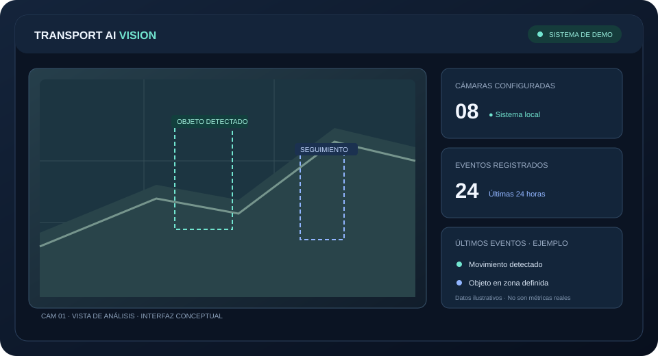
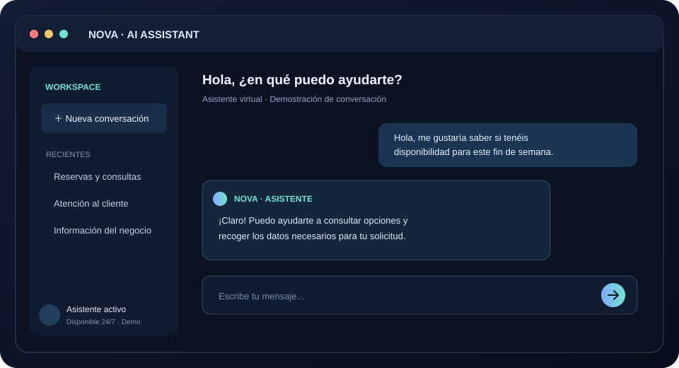
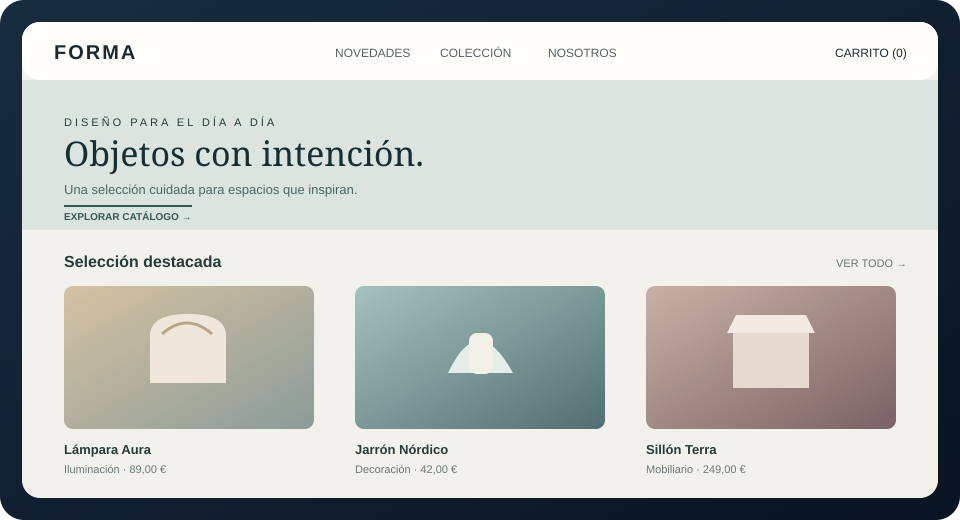

↗
Software a medida
Aplicaciones web, paneles de control y herramientas internas diseñadas en torno a procesos concretos.
Transport AI desarrolla software, visión artificial y automatizaciones que ayudan a transformar procesos complejos en operaciones más claras.

Diseñamos herramientas a partir de los retos del negocio: conectamos sistemas, simplificamos tareas y hacemos visible la información clave.
Aplicaciones web, paneles de control y herramientas internas diseñadas en torno a procesos concretos.
Análisis de imágenes y vídeo, revisión de eventos y evidencias para apoyar tareas de supervisión.
Flujos que conectan herramientas, coordinan información y ayudan a reducir tareas repetitivas.
Prototipos conversacionales y de voz para explorar experiencias de atención y consulta.
APIs, bases de datos y servicios conectados con lógica clara y una visión completa del proceso.
Experiencias para centralizar pedidos, entregas, incidencias, avisos y datos operativos.
Un sistema en desarrollo para analizar imágenes y vídeo, registrar eventos y facilitar la revisión de incidencias.
Una demostración visual de flujos de análisis y seguimiento.
Python · FastAPI · OpenCV · SQLite · React / TypeScript
Conectamos tareas, aplicaciones y datos para que los procesos cotidianos sean más coherentes y fáciles de seguir.
Integración de servicios, APIs y fuentes de información existentes.
Diseño de automatizaciones y avisos que responden a necesidades operativas.
Paneles y registros para entender estados, actividad e incidencias.
Proyectos propios, prototipos funcionales y demostraciones. Cada ficha indica su estado con transparencia.
Plataforma en desarrollo para analizar cámaras e incidencias con procesamiento OpenCV, motor de anomalías, evidencias e historial.
Aplicación para centralizar operaciones, pedidos, estados de entrega e incidencias, con API, panel de gestión y persistencia.

Prototipos de recepción digital adaptados a alojamientos, consultas e información del establecimiento.

Propuesta visual de demostración para un catálogo y experiencia de compra; no es una tienda publicada ni un proyecto comercial entregado.
Entorno de trabajo digital concebido para organizar herramientas, tareas y agentes especializados.
Espacio de trabajo basado en inteligencia artificial, con áreas especializadas y estructura preparada para herramientas y flujos.
Demostraciones web adaptadas a hoteles, restauración y ocio, con interfaces y funcionalidades específicas.
Concepto de experiencia digital para un complejo turístico, con presentación inmersiva de alojamiento y servicios.
Prototipos de experiencias web con contenido y recorridos digitales pensados para negocios de restauración.
Iniciativa tecnológica centrada en software a medida, automatización e inteligencia artificial aplicada a negocios.
Los requisitos de seguridad dependen del alcance y la arquitectura de cada proyecto; se concretan con el contexto de uso, los sistemas implicados y los datos que se manejan.
Definir qué información necesita cada flujo y evitar recopilar aquello que no aporta valor.
Evaluar cómo se conectan servicios, APIs y sistemas antes de incorporarlos al proceso.
Explicar con claridad qué es una demo, un prototipo, un MVP o un desarrollo activo.
Cuéntanos qué reto quieres explorar. Podemos hablar de una aplicación, una automatización, visión artificial o una colaboración profesional.
contacto@transportai.esDel problema al prototipo, con transparencia sobre lo que está construido y lo que sigue en evolución.
Conocer el contexto, las personas y la fricción que merece atención.
Diseñar e implementar una propuesta proporcionada al objetivo.
Demostrar, recoger feedback y evolucionar el producto.
Transport AI es una iniciativa tecnológica fundada por Álvaro Chaveinte Camargo. El trabajo combina desarrollo web, backend, automatización, inteligencia artificial y visión artificial aplicada a casos de uso concretos. Los proyectos y demos se presentan según su estado real, sin describir prototipos como productos terminados.
Tecnologías utilizadas en distintos proyectos. La profundidad varía según la herramienta.
Álvaro Chaveinte Camargo está construyendo su recorrido profesional a través del desarrollo de productos y soluciones tecnológicas. Su experiencia se ha formado principalmente mediante proyectos propios, MVPs y prototipos funcionales; está abierto a oportunidades junior, colaboraciones y equipos donde aportar iniciativa, responsabilidad y ganas de aprender construyendo.
Además de programar, trabaja en la definición de producto: analizar procesos, ordenar requisitos, diseñar experiencias, preparar demos personalizadas y explicar qué resuelve cada propuesta.
Seguimiento de operaciones, entregas, incidencias y coordinación de equipos.
Recepción digital, consultas, información y asistencia en reservas.
Experiencias web, atención y procesos repetitivos.